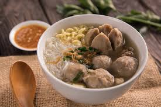
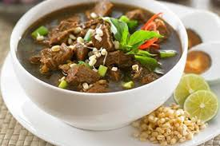
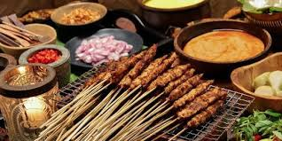

Beberapa Kuliner di indonesia
Indonesia terkenal dengan keanekaragaman kulinernya yang kaya akan cita rasa dan tradisi. Dari Sabang hingga Merauke, setiap daerah memiliki makanan khas yang unik,
mulai dari rendang yang berasal dari Sumatera Barat, hingga papeda, makanan pokok berbahan dasar sagu dari Papua. Makanan Indonesia terkenal dengan penggunaan rempah-rempah yang melimpah, menciptakan kombinasi rasa yang kuat dan kompleks.
Tidak hanya sekadar makanan, kuliner di Indonesia juga sering kali terkait erat dengan adat dan upacara tradisional, membuat setiap hidangan menjadi bagian penting dari identitas budaya.
Baik makanan jalanan yang sederhana maupun hidangan kerajaan yang mewah, semuanya memberikan pengalaman rasa yang tak terlupakan bagi siapa saja yang mencobanya.

klik link di bawah untuk mengetahui lebih dalam wikipedia.nasigoreng.com

klik link di bawah wikipediarendang.com

source from IndonesiaTravel.com mengetahui lebih lanjut
{kind=link}

source from idntimes.com untuk informasi lebih lanjut
{kind=link}

source from Pidtjar.com jika anda tertarik dengan kuliner yang satu ini
menarik bukan kuliner di indonesia